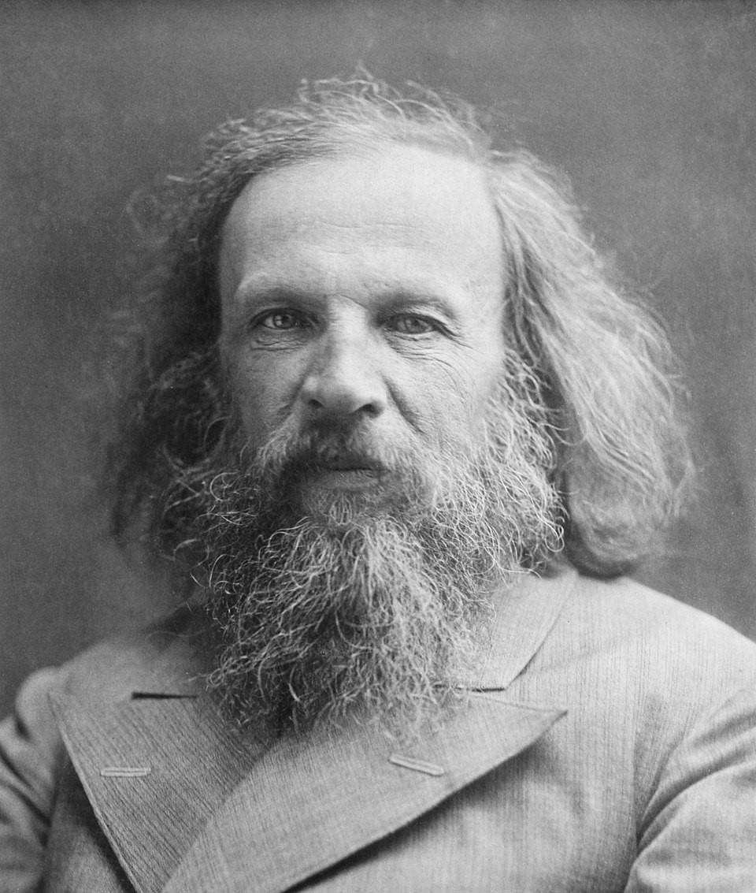
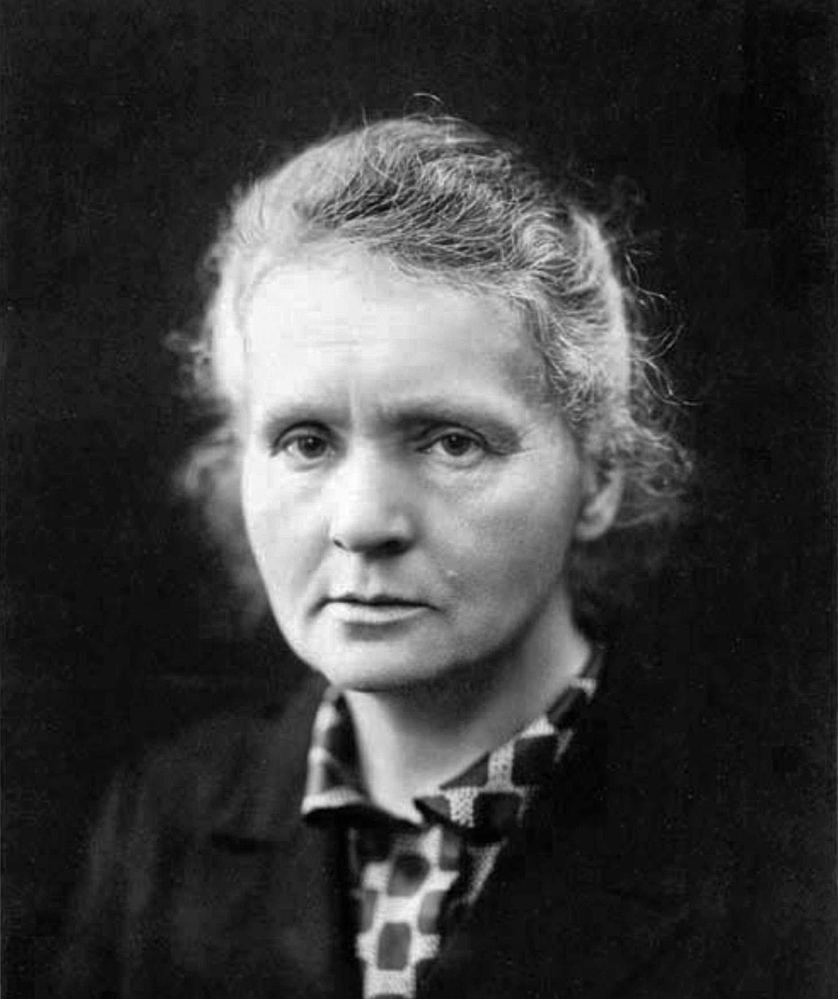
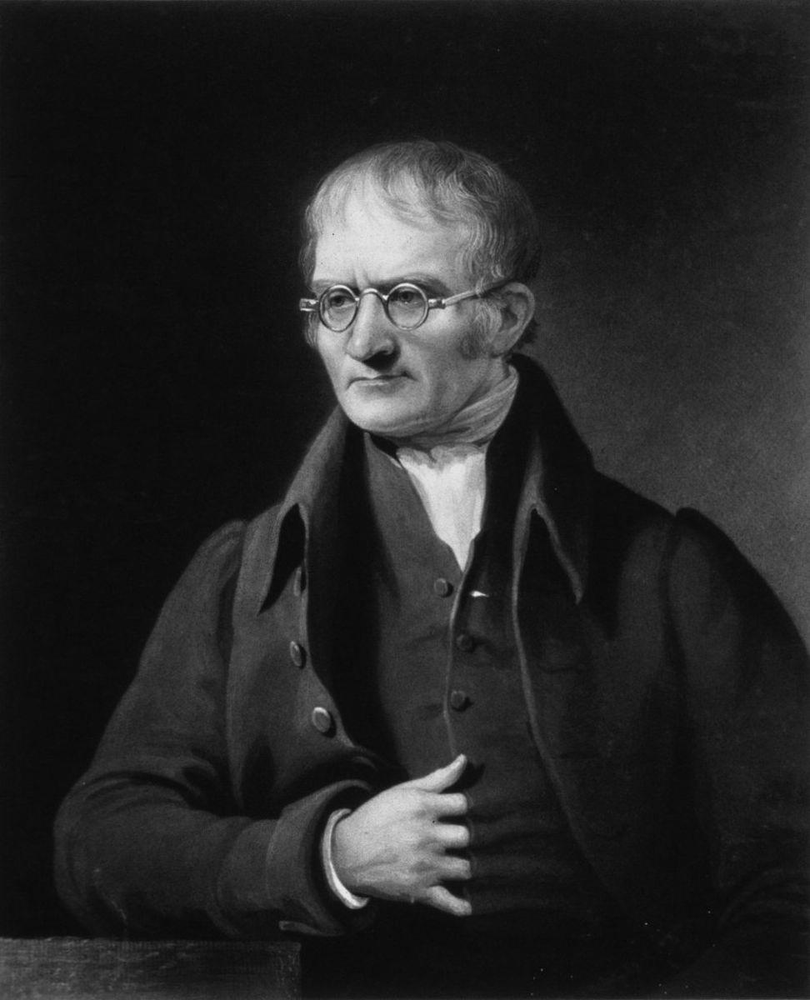
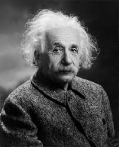
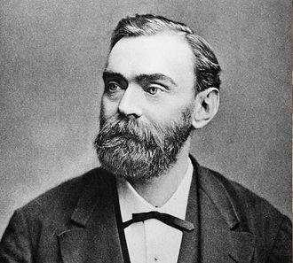
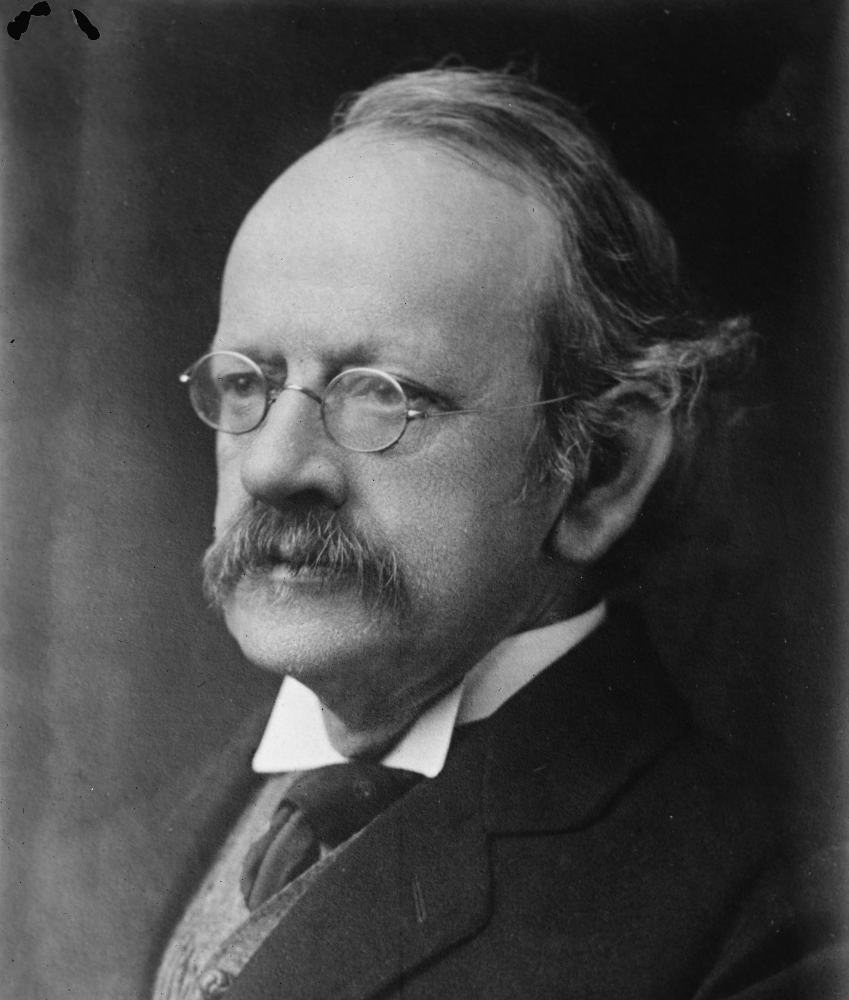
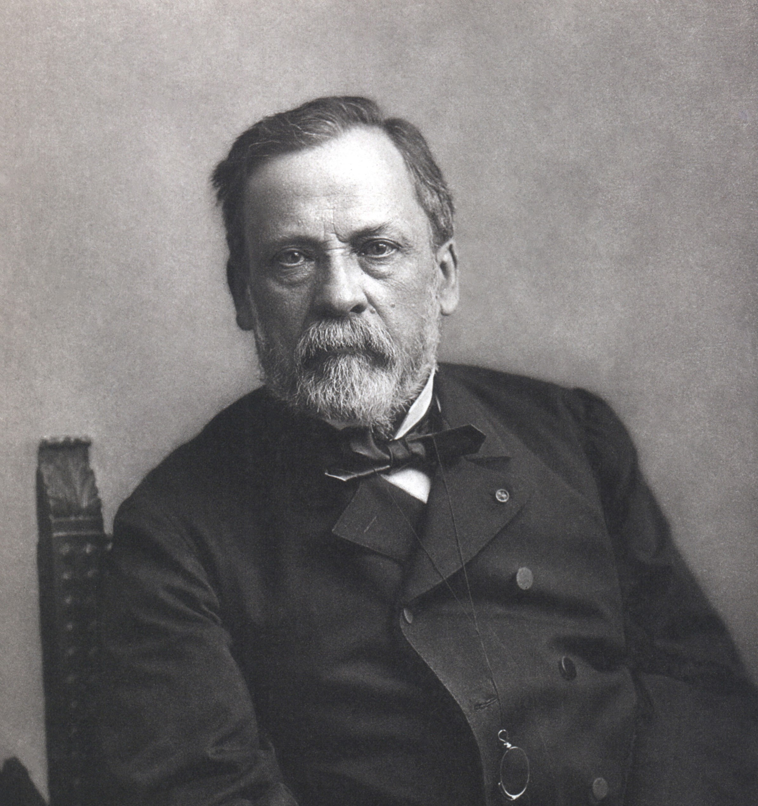
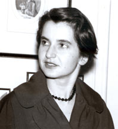
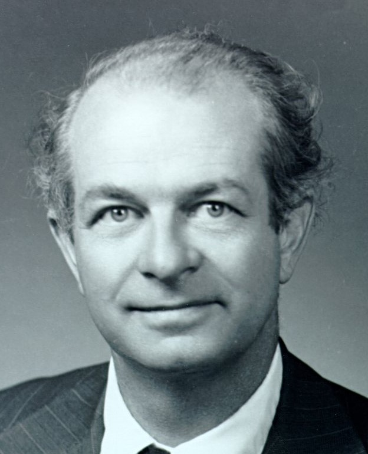
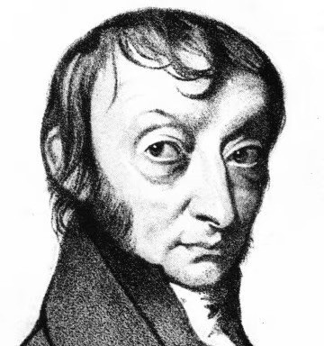

Kimyanın Öncüleri
Bilim tarihine yön veren, elementlerin gizemini çözen ve modern kimyayı inşa eden 15 dahi bilim insanının hayat hikayeleri.

Dmitri Mendeleev
1834 - 1907Periyodik tablonun babası. Elementleri sıralayarak geleceği tahmin etti.
Biyografiyi Oku
Marie Curie
1867 - 1934Radyoaktivitenin kâşifi, iki farklı alanda Nobel kazanan tek insan.
Biyografiyi Oku
Niels Bohr
1885 - 1962Atomun yapısını ve elektron yörüngelerini modelleyen fizikçi.
Biyografiyi Oku
Ernest Rutherford
1871 - 1937Atom çekirdeğini keşfetti ve protonu tanımladı.
Biyografiyi Oku
John Dalton
1766 - 1844Modern atom teorisinin kurucusu. Atom ağırlıkları tablosunu oluşturdu.
Biyografiyi Oku
Albert Einstein
1879 - 1955Atomların varlığını matematiksel olarak kanıtladı (Brown Hareketi).
Biyografiyi Oku
Alfred Nobel
1833 - 1896Dinamitin mucidi. Mirasını bilime ve barışa adayarak Nobel Ödülleri'ni kurdu.
Biyografiyi Oku
Antoine Lavoisier
1743 - 1794Modern kimyanın babası. Kütlenin korunumu yasasını buldu ve yanmayı açıkladı.
Biyografiyi Oku
Robert Boyle
1627 - 1691Simyadan kimyaya geçişin öncüsü. Gazların basınç-hacim ilişkisini (Boyle Yasası) buldu.
Biyografiyi Oku
J.J. Thomson
1856 - 1940Elektronu keşfederek atomun bölünebileceğini kanıtladı. Üzümlü kek modelini geliştirdi.
Biyografiyi Oku
Michael Faraday
1791 - 1867Elektroliz yasalarını buldu ve benzini keşfetti. Elektrokimyanın temellerini attı.
Biyografiyi Oku
Louis Pasteur
1822 - 1895Moleküler asimetriyi (kiralite) keşfetti. Pastörizasyon ve aşı çalışmalarıyla tanınır.
Biyografiyi Oku
Rosalind Franklin
1920 - 1958DNA'nın çift sarmal yapısını ortaya çıkaran kritik X-ışını fotoğraflarını çekti.
Biyografiyi Oku
Linus Pauling
1901 - 1994Kimyasal bağların doğasını açıkladı. Hem Kimya hem Barış Nobel ödülü kazandı.
Biyografiyi Oku
Amedeo Avogadro
1776 - 1856Moleküler teorinin kurucusu. Avogadro yasası ve Mol kavramı ile tanınır.
Biyografiyi Oku